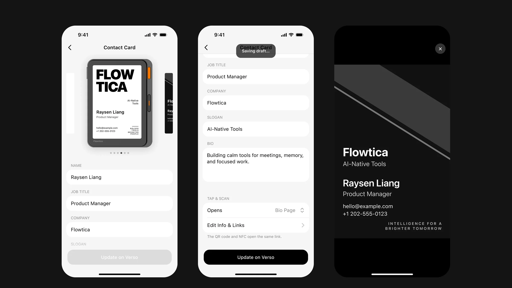
Überblick
Verso-Visitenkarte · iOS-Flows
Verso ist eine NFC-Visitenkarte mit E-Ink-Display: Nutzende richten ihre Karte in der iOS-App ein, und ihr Gegenüber tippt sie an oder scannt einen Code, um eine Webseite zu sehen, einen Link zu öffnen oder den Kontakt zu speichern. Ich habe alle Design-Ergebnisse verantwortet, vom PRD bis zur Übergabeversion der iOS-Flows.
Details
Überblick in 30 Sekunden
Ein Software-Flow unter Hardware-Bedingungen: Das E-Ink-Display kennt nur Graustufen und aktualisiert langsam – deshalb muss die App „bearbeiten → auf dem Gerät veröffentlichen → Daten vom Gegenüber zurückbekommen“ klar vermitteln.
Mein Vorgehen: zuerst das PRD in eine Flow-Liste auf Frame-Ebene zerlegen, dann zwei Galerien aus echten Aufnahmen erstellen (Karteninteraktion, Wettbewerb), um die Entscheidungspunkte offenzulegen, und schließlich 47 Frames iOS-Flows liefern: Einstieg (A1–A4), Kartenstartseite und Update-Flow (B0–B13, inklusive automatisch gespeichertem Entwurf, Pflichtfeldprüfung, Linkprüfung, Offline-Zustand, Aktualisierung läuft / erfolgreich / fehlgeschlagen) sowie Wallpaper-Vorschau (W9).
01 Was das Produkt ist
Ein E-Ink-Display, das die Visitenkarte zeigt – und die App dahinter
Auf dem Gerät: Das E-Ink-Display zeigt die Kartenansicht; per NFC-Antippen oder QR-Scan gelangt das Gegenüber zu einer Web-Visitenkarte, einem eigenen Link oder zu „Als Kontakt speichern“. In der App (PRD V2.0): Geräteeinstellungen → Contact Card; dort werden Name, Titel, Kontaktdaten, Opens (was sich nach dem Antippen öffnet) und die Bio-Seite eingestellt. Spätere PRDs ergänzten eine Graustufen-Kartenansicht aus einem Foto der Visitenkarte, den Logo-Upload und drei Vorlagen.
Wettbewerb als Referenz: Digitale Visitenkarten wie Blinq, HiHello, Popl, Mobilo und Linq funktionieren per Handy-an-Handy oder QR-Code und haben kein eigenes Display. Der Unterschied bei Verso: „Die Karte selbst ist der Bildschirm“ – deshalb werden das Aussehen der Kartenansicht, der Zeitpunkt der Aktualisierung und das Verhalten offline zu Designfragen.
02 Was ich gemacht habe
Vom PRD zur Übergabeversion mit 47 Frames
- Flow-Liste auf Frame-Ebene: Jeder Frame nennt Inhalt, zugehörige PRD-Ziffer und Hinweise für die Entwicklung; was das PRD nicht abdeckt, habe ich nicht eigenmächtig gezeichnet, sondern als offene Fragen für das Produktmanagement gesammelt.
- Zwei Galerien aus echten Aufnahmen (fortlaufende HTML-Seiten): Die Interaktionsgalerie zeigt 11 Lösungen für „was passiert, nachdem das Gegenüber die Karte antippt“; die Wettbewerbsgalerie zeigt anhand von 42 Screenshots aus 11 Produkten, wie Bearbeitungsseite, Opens-Menü, Validierung und Fehlerfälle gelöst sind.
- Erklärgrafik zu Kontaktaustausch und Lead-Erfassung: wie das Gegenüber seine Daten an mich zurückschickt (Formulare zur Lead-Erfassung und Benachrichtigungen bei Blinq / HiHello / Popl / Mobilo).
- Übergabeversion mit 47 Frames (402×874): Einstieg A1–A4, Kartenstartseite B0–B13, Wallpaper-Vorschau W9; das Label jedes Frames nennt Zustand und Auslöser.
03 Flows und Zustände
Kartenstartseite und Update-Flow
Die Startseite ist eine bearbeitbare Visitenkarte + ein Update-Button unten: Jede Änderung speichert automatisch einen Entwurf und aktiviert Update; Update überträgt die Karte auf das Gerät, dazwischen gibt es drei Zustände – Aktualisierung läuft, erfolgreich, fehlgeschlagen; offline lässt sich bearbeiten, aber nicht aktualisieren.
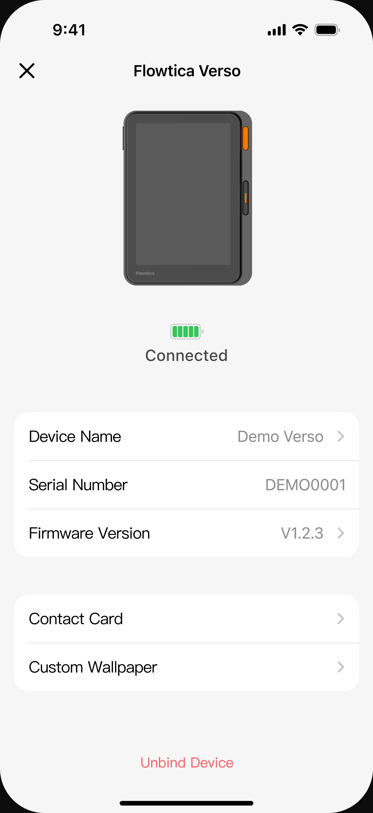
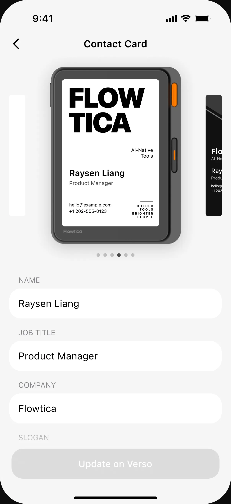
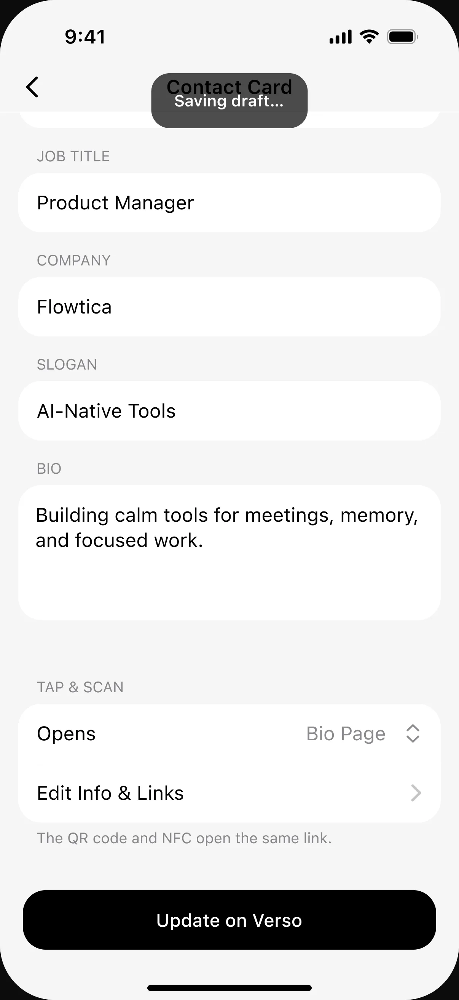
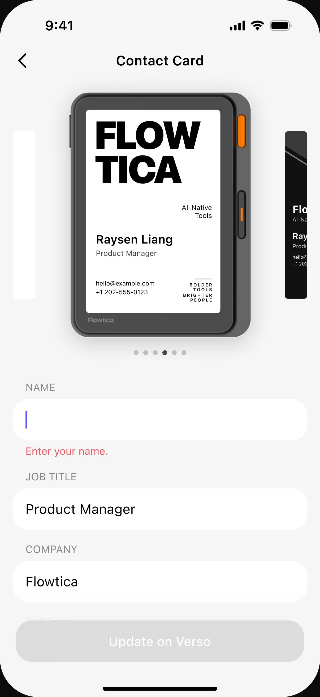
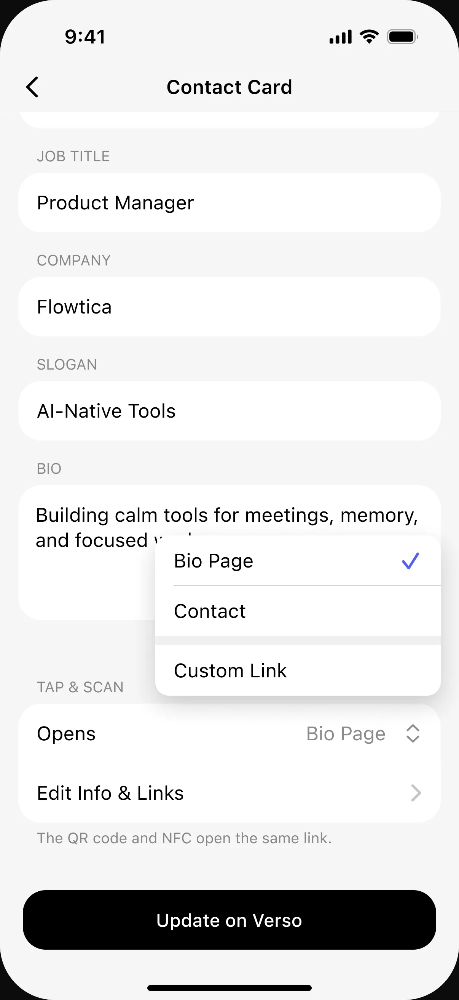
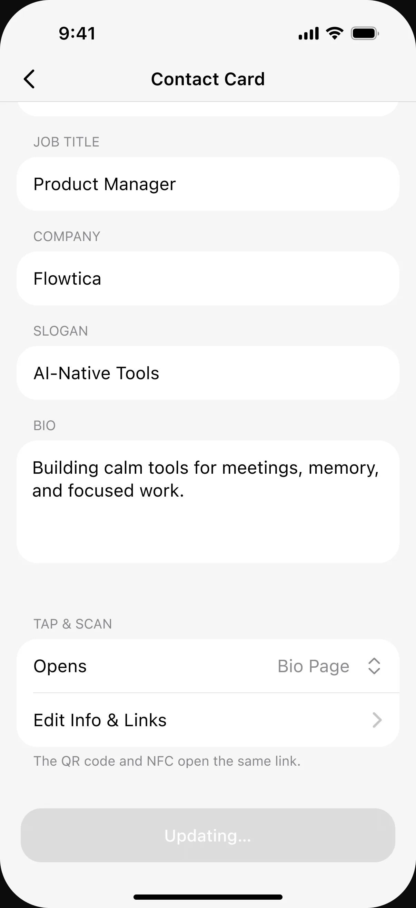
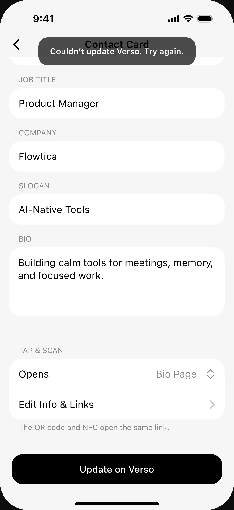
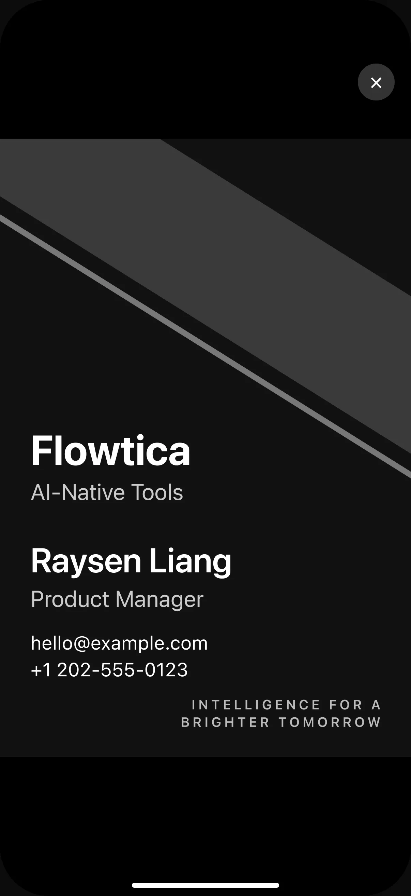
Contact Card und Customize
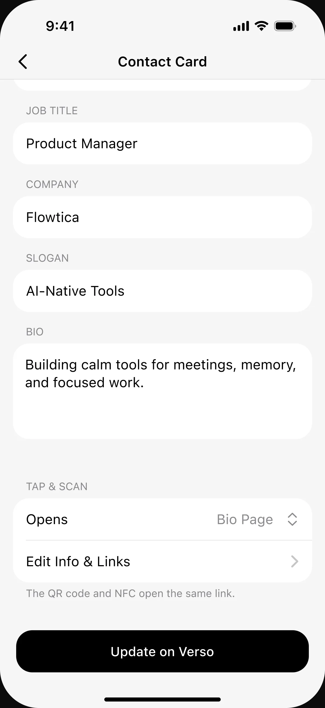
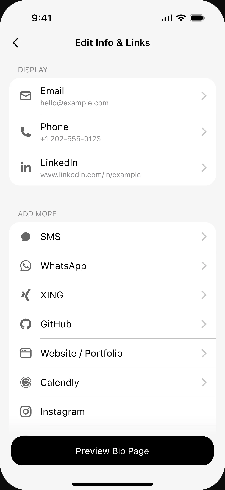
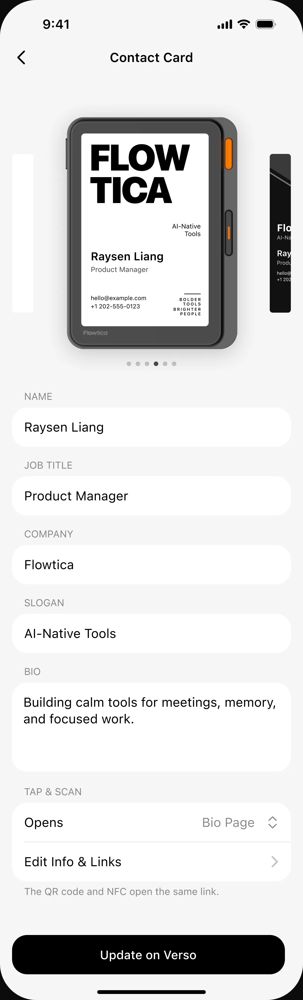
Zustandstabelle (abgedeckt in der Übergabeversion)
| Schritt | Standard | Zustände und Ausnahmen |
|---|---|---|
| Einstieg | Verso verbunden | Gekoppelt, aber offline (Not Connected) · nicht gekoppelt (Geräteinfo zeigt —) |
| Bearbeiten | Kartenstartseite | Entwurf wird beim Bearbeiten automatisch gespeichert · Pflichtfeldprüfung bei leerem Namen · HTTPS-Präfixprüfung für den eigenen Link, sobald das Feld den Fokus verliert · Hinweis auf leere URL direkt nach Auswahl von „eigener Link“ |
| Opens | Web-Visitenkarte | Eigener Link (gültig / ungültig) · Kontakt speichern · Update nicht verfügbar, solange LinkedIn leer ist |
| Update | Verfügbar / nicht verfügbar | Während der Aktualisierung ausgegraut · Erfolgs-Toast („nothing to update“, wenn nichts geändert wurde) · Fehler-Toast + erneut versuchen · offline kein Update |
| Vorschau | Miniaturvorschau des Geräts | Antippen öffnet die Wallpaper-Vorschau im Vollbild, × schließt sie |
04 Hardware-Grenzen und offene Fragen
Ein E-Ink-Display ist kein Smartphone-Display
- Graustufen und Auflösung: Die Kartenansicht kennt nur Graustufen, Fotos und Logos müssen vor der Anzeige in Graustufen umgewandelt werden; die genaue Auflösung und die Zahl der Graustufen waren meine erste offene Frage an das Produktmanagement.
- Aktualisierung: E-Ink aktualisiert langsam und hinterlässt Geisterbilder; Update braucht deshalb ein klares Feedback „Aktualisierung läuft / erfolgreich / fehlgeschlagen“ statt der sofortigen Übernahme, die man von Smartphone-Apps kennt.
- Inhaltslänge: Die Zeichenzahl der Bio, welche von mehreren Kontaktangaben auf das Display kommt, und die finalen Texte regelt das PRD nicht; die Übergabeversion arbeitet mit Platzhaltern + markierten offenen Fragen.
05 Nächster Schritt · Redesign (in Arbeit)
Seitenhierarchie und UI-Ästhetik
Ziel der Übergabeversion war: „alle Zustände gemäß PRD vollständig zeichnen, damit die Entwicklung sie bauen kann“. Als persönliche Retrospektive überarbeite ich jetzt zwei Dinge: ① Seitenhierarchie – Einstieg, Kartenstartseite, Contact Card, Customize und Geräteeinstellungen neu gliedern, damit weniger hin- und hergesprungen werden muss; ② UI-Ästhetik – Kartenvorschau und Kartenstartseite visuell vereinheitlichen, orientiert am Stil der Verso-Seite auf der offiziellen Flowtica-Website. Die Demo nutzt Inhalte aus zwei PRDs: Kartenerstellung aus Fotos und Logo-Vorlagen.